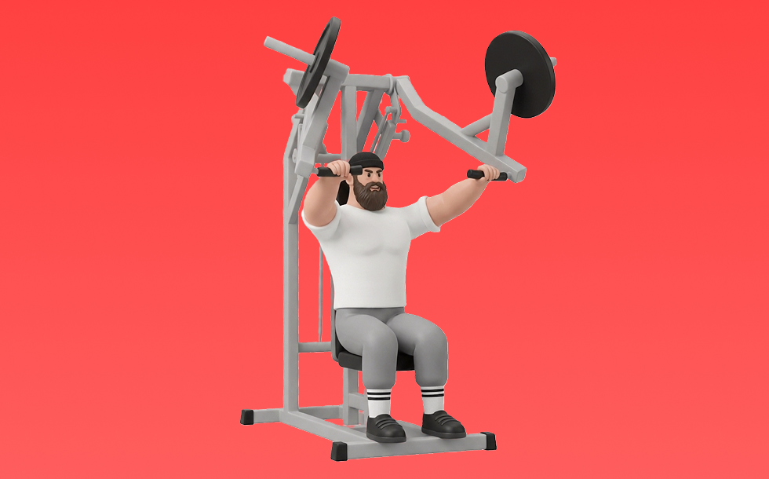

インクラインチェストプレス

インクラインチェストプレスとは、マシンを使ってベンチ角度を上げた状態で「押す」動作で胸上部（大胸筋鎖骨部）、肩前部（三角筋前部）、腕（上腕三頭筋）を鍛える種目です。軌道が安定して狙った部位に効かせやすいのが特徴で、ベンチに仰向けになり、胸に下ろして押し上げる動作を繰り返します。胸上部の厚みづくりや上半身の押す力の向上が期待できます。
- 対象部位
- 胸
- 器具
- マシン
- 記録形式
- 重量・回数
- 別名
- インクラインチェスト / インクラインマシンチェストプレス / incline chest press / incline machine press
YouTube動画
-
【大胸筋上部】インクラインダンベルベンチのやり方【筋トレ】
-
徹底解説シリーズ02 鈴木雅が「インクラインマシンプレス」を伝授
-
【胸トレ】マシンの使い方 インクラインチェストプレス
-
【筋トレ】大胸筋の上部に効く！山本義徳氏お勧めのインクラインベンチプレス
-
【大胸筋上部を最速で発達させる】IFBB PRO寺島遼が実践するインクラインベンチプレスの極意。
-
【胸トレ】マシントレーニングならこれをやれ！大胸筋を発達させるチェストプレス徹底解説
-
【初心者】インクライン・ダンベル・ベンチプレスの正しいやり方 | 分厚い胸板を作る【ビーレジェンド プロテイン】
-
大胸筋上部の厚みをつけたい人必見！スミスで行うインクラインベンチプレスのわかりやすい解説！
-
インクラインダンベルプレスの全てをここに置いてきた。【徹底解説】【有料級第４弾】
-
【持田式】チェストプレスの素晴らしさを知って欲しい
-
【胸強化】インクライン・チェストプレス使用方法
-
【インクラインより効率的】大胸筋上部をデカくする！フラットチェストプレス徹底解説！
-
【チェストプレス】基本まちがってない？ボディビル世界王者 山岸秀匡が教える初心者から上級者まで必須の正しい使い方【ドラゴンの教科書】
-
筋トレ初心者が最初に覚えるべき胸トレのマシン使い方解説【エニタイムフィットネス】
YouTubeショート
-
インクラインチェストプレス大胸筋上部を鍛える！その1
-
【胸上部を狙え🔥】インクラインチェストプレスの使い方｜初心者OK！
-
ハンマーインクラインプレス解説#ボディメイク #sgir #筋トレ #ダイエット #パワーリフティング @samgetitright
-
インクラインダンベルベンチプレス5つのポイント #パーソナルトレーナー #筋トレ #大胸筋 #胸トレ
-
胸トレのやり方🔥〜ダンベルプレス基礎編〜 #筋トレ #筋肉 #筋肉社長 #胸トレ
-
胸トレ！チェストプレスで鍛え分け！ #筋トレ
-
インクラインプレスで大胸筋上部を鍛える2つのポイント #フィットネス #筋トレ
-
ジムで初めてチェストプレスをする時ありますよね？そんな人のために持田選手がチェストプレスを使ったトレーニング方法を伝授！#筋トレ #volix #胸トレ #ちょこっと惜しい #大胸筋
-
【大胸筋】【スミスマシンインクラインベンチプレス】よくある3つの間違い #パーソナルトレーナー #筋トレ #フィットネス #胸トレ
-
コツ教えます！日本一の大胸筋によるチェストプレス
-
ベンチプレスの正しいやり方を紹介 #筋トレ #フィットネス
-
胸トレで腕肩を使わないコツ #筋トレ女子
-
インクラインダンベルプレスのお手本
-
【かんたんマシンの使い方】チェストプレス編＃shorts
-
インクラインチェストプレス #anytimefitness #エニタイム #ジム #筋トレ #筋トレ初心者 #胸トレ #fitness
-
インクラインダンベルプレス解説 #筋トレ #筋トレ方法
-
マシンを使ったショルダープレスのコツ
-
綺麗な大胸筋を作ったスミスインクラインプレスのやり方※エゴイスト
-
持田選手にダンベルインクラインプレスについてレクチャーしていてもらいました！次はどの種目の解説をやってほしいかコメントしてね！#筋トレ #volix #トレーニング #ちょこっと惜しい #胸トレ
-
正しいダンベルベンチプレス5つのポイント 【筋トレ】
-
【胸トレ】スミスマシンインクラインベンチプレス -3つのポイント- #パーソナルトレーナー #筋トレ #フィットネス #胸トレ #大胸筋
-
インクラインダンベルプレスのコツ。 #細マッチョ #筋トレ #フィットネス
-
初心者にありがちなミス スミスマシン ショルダープレス🏋️♀️
-
【SGIR】胸トレ3種目だけなら何選ぶ？
-
【ダンベル】胸全部鍛えるトレーニング４選 #筋トレ
-
このダンベルプレスデカくなりません #筋トレ
-
【胸トレ解説】アイソレート・デクラインチェストプレス #筋トレ解説 #胸トレ #胸筋トレ
-
最短で胸をデカく！！インクラインベンチプレス解説🔥#筋トレ #マッチョ #胸トレ#ベンチプレス
-
効かせるショルダープレス
-
肩トレのやり方🔥〜インクラインサイドレイズ基礎編〜 #筋トレ #筋肉 #筋肉社長 #マッチョ #肩トレ
-
胸が成長しないダンベルプレス #筋トレ
-
正しいショルダープレス4つのポイント #筋トレ
-
【胸トレ】スミスインクラインプレスこれで効くわ #胸筋トレ #インクライン
-
今すぐにやめた方がいいインクラインダンベルプレス #筋肉
動作方法
- 安定した姿勢を作り、肩と体幹を固定する
- 狙う部位を意識して、反動を使わずに押す
- 可動域を保ちながら、ゆっくり元に戻す
動作ポイント
- 肩をすくめない
- 手首を寝かせすぎない
- 反動を使いすぎない
ワンポイントアドバイス
- 最初は可動域を優先してフォームを固める
- 肩に違和感がある日は重量を落として調整する
目的別回数設定
目的や体力に応じた一般的な目安です。無理のない範囲で調整してください。
- 筋力アップ
- 1〜5回
- 筋肥大
- 6〜12回
- 持久力アップ
- 13〜20回
YouTube動画について
動画はYouTubeの公開情報をもとに表示しています。内容は投稿者によるもので、Biggrによる監修ではありません。
アプリを入手
筋トレやトレーニングの記録はBiggrにお任せください。今すぐ無料で使い始められます。